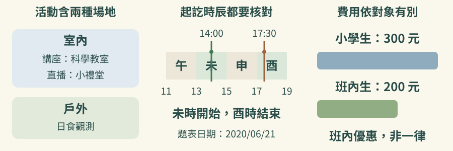
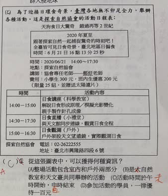

依分享頁原圖核對｜gemini-chinese-4.jpg
完整原題
作答所需文章／材料
為了迎接日環食奇景，臺灣各地無不卯足全力，舉辦各種活動。這是探索自然協會的活動日程表。 天狗食日大驚奇・錯過再等2世紀 2020年夏至：跟著探索自然一起捕捉驚奇的時刻吧！全臺皆可見日食奇景；臺北地區日偏食時間：6月21日16點13分25秒。 時間：2020/06/21 14:00–17:30 地點：探索自然協會 講師：協會專任老師 費用：小學生300元，班內生優惠200元（限量25組，並贈送太陽鏡片）。 電話：02-26222555 地址：臺北市興隆路四段6號| 時間 | 活動內容 |
|---|---|
| 14:00–15:00 | 日食講座（科學教室）；解說日食形成原理、模擬光影變化；親手製作針孔成像 |
| 14:30–17:30 | 日食直播（小禮堂）；與天文館同步連線，觀賞日食全程 |
| 15:00–16:30 | 日食觀測（戶外）；戶外架設天文望遠鏡，實際觀測日食 |
從這張圖表中，可以獲得何種資訊？
(A) 整場活動包含室內和戶外兩部分
(B) 是大自然教室和天文臺共同舉辦的活動
(C) 活動時間於午時開始，申時結束
(D) 參加活動的學員，一律優待一百元
先想一想，再查看答案、解說與原圖
原卷作答：C
正確答案：A。整場活動包含室內和戶外兩部分
逐項解析
| 選項與原句 | 判讀 | 句意與判斷理由 |
|---|---|---|
| (A) 整場活動包含室內和戶外兩部分 | 應選 | 活動含講座、影片、直播，也有戶外觀測，因此包含室內與戶外。 |
| (B) 是大自然教室和天文臺共同舉辦的活動 | 不選 | 主辦資訊是探索自然協會，並沒有選項所述共同主辦單位。 |
| (C) 活動時間於午時開始，申時結束 | 不選 | 午時約11:00–13:00、申時約15:00–17:00。活動14:00開始屬未時、17:30結束屬酉時，選項的起訖時辰都不正確。 |
| (D) 參加活動的學員，一律優待一百元 | 不選 | 費用為小學生300元、班內生優惠200元，並非一律優待100元。 |
詳細說明與解題步驟
先把活動時間、內容、費用分開核對。講座與直播屬室內活動，日食觀測屬戶外活動，因此 A 正確。
B 的共同主辦單位不符合活動表；C 的午時、申時皆不符14:00–17:30，應是未時開始、酉時結束；D 的一律優待100元也不符合一般300元、班內生200元的收費。
原卷 C 選項使用傳統時辰，必須完整比對開始與結束時間，不能把它改寫成「下午兩點開始」後只檢查一半。

① 講座、直播在室內，觀測在戶外
題表講座在科學教室、直播在小禮堂，另列戶外日食觀測，整場包含室內與戶外，所以 A 正確。主辦資訊要看探索自然協會；場地和同步連線天文館，不等於共同主辦單位。
② 14:00 是未時，17:30 是酉時
開始的 14:00 在未時範圍，結束的 17:30 在酉時範圍。C 寫午時開始、申時結束，起點和終點都不合；不能只看活動在下午，就把它判成午時。圖上的時段只核對題中 2020 年活動。
③ 班內生少付一百元，不等於一律優惠
原表小學生 300 元、班內生優惠 200 元。班內生確實比一般價少付 100 元，但優惠有指定對象，不能擴大為參加活動的學員一律優待一百元；D 錯在一律，不是把折扣金額當售價。
④ 分清活動場地、起訖時辰與費用對象
答案 A：活動包含室內與戶外兩部分
- 教室、禮堂與戶外，直接支持 A。
- C 起訖都要對：未時開始、酉時結束。
- D 注意一律與班內生優惠的對象差別。
原圖（僅本題）
